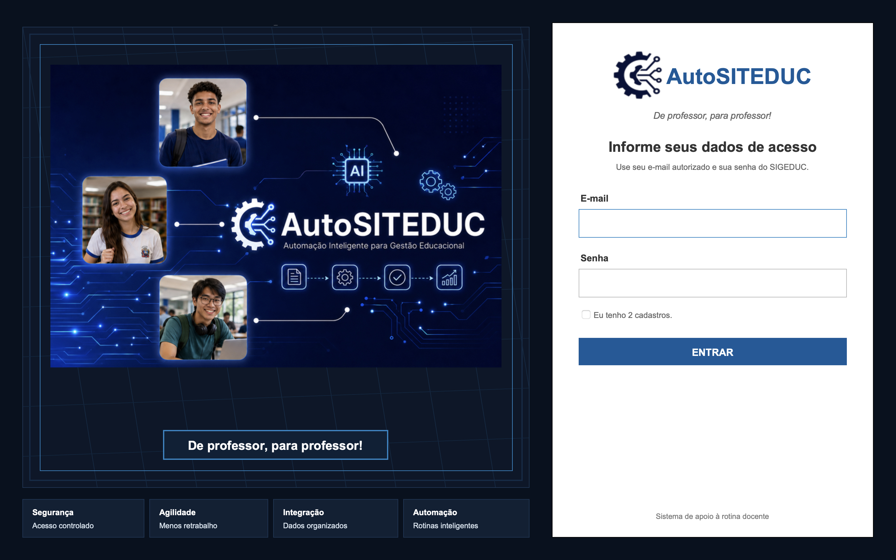

Reduza em mais de 90% o tempo de cadastro de turmas
Transforme uma sequência longa de cliques e cadastros repetitivos em uma rotina guiada, simples e muito mais rápida.
Feito de professor para professor
O AutoSITEduc ajuda professores a reduzir retrabalho, acelerar rotinas operacionais e lançar notas com muito menos esforço. Deixe que ele faça o trabalho pesado enquanto você ganha tempo para ensinar, descansar ou cuidar de outras atividades. Use o SIGEduc apenas para validação e para demais atividades tais como, lançamento da frequência e dos conteúdos.ff

Por que usar
O SIGeduc é uma ferramenta essencial para a gestão escolar. O AutoSITEduc entra como apoio à rotina do professor, melhorando a experiência de uso nas tarefas que tomam tempo, exigem repetição e costumam gerar cansaço no dia a dia.
Transforme uma sequência longa de cliques e cadastros repetitivos em uma rotina guiada, simples e muito mais rápida.
Organize o fluxo de lançamento de notas e execute as etapas com muito menos esforço manual.
Tem mais de uma disciplina na mesma turma? Reaproveite notas e evite repetir o mesmo trabalho várias vezes.
Recebeu uma planilha por e-mail? O AutoSITEduc foi pensado para transformar esse arquivo em parte do fluxo de lançamento.
Sabe quando o SIGeduc expira e você perde o que estava fazendo? A proposta é tornar esse problema coisa do passado.
Menos cliques, menos retrabalho e mais tempo para planejar aulas, corrigir atividades, descansar ou viver fora da tela.
Como funciona
O professor entra no AutoSITEduc, escolhe o que precisa fazer e acompanha o processo por uma interface clara. A ferramenta foi desenhada para reduzir etapas manuais em rotinas como carregar turmas, cadastrar avaliações e lançar notas.
O AutoSITEduc identifica turmas, turnos, disciplinas e informações necessárias para organizar sua rotina.
Você evita repetir o mesmo caminho várias vezes e ganha velocidade nas tarefas mais cansativas.
Quando houver notas em planilhas ou disciplinas relacionadas, o fluxo pode ser reaproveitado para reduzir retrabalho.
Na prática
Carregar dados, organizar turmas, preparar avaliações e lançar notas são tarefas necessárias, mas não precisam consumir horas do seu dia. O AutoSITEduc foi pensado para transformar esse processo em uma experiência mais leve, previsível e produtiva.
Confiança
O AutoSITEduc não substitui o SIGeduc. Ele apoia o professor nas etapas repetitivas, mantendo a decisão e o acompanhamento nas mãos do usuário.
Fluxo guiado para reduzir erros e repetição.
Interface pensada para professores, com linguagem simples e objetiva.
Apoio para rotinas de turmas, avaliações e lançamento de notas.
Mais previsibilidade para tarefas que antes dependiam de muitos cliques.
Tutoriais
Em breve, esta área reunirá vídeos rápidos para mostrar como carregar dados, cadastrar avaliações, importar notas e aproveitar melhor o AutoSITEduc na rotina docente. Você pode acompanhar os tutoriais no canal do Salvador Inteligência Tech (clique aqui). Se inscreva e ative o sino para não perder nenhuma novidade.
Veja como acessar o sistema e entender a funcionalidade de cada tela.
Aprenda a organizar suas informações antes de cadastrar avaliações.
Saiba como verificar se a versão do sistema instala é a mais recente.
Veja como usar o fluxo de lançamento para economizar tempo.
Preços de lançamento
Os valores abaixo são promocionais de lançamento até 22 de julho. Novas funcionalidades estão sendo implementadas e os preços poderão ser atualizados nas próximas versões do AutoSITEduc.
Oferta por tempo limitado
Garanta seu acesso ao AutoSITEduc pelo valor de lançamento. Quando o prazo terminar, os planos poderão receber novos preços.
Calculando o tempo restante da promoção...
Quero aproveitar o preço promocionalOpção para professores que desejavam usar o AutoSITEduc desde a primeira unidade letiva.
* Este plano não está mais disponível porque a 1ª unidade letiva já foi encerrada.
Ideal para professores que querem acelerar as rotinas da segunda unidade letiva.
* O acesso ao sistema será bloqueado 7 dias após o encerramento da 2ª unidade previsto pelo calendário do ano letivo.
Quero este planoMelhor opção para quem quer atravessar o restante do ano com menos retrabalho.
Cada unidade letiva foi considerada como um período de 3 meses para o cálculo do equivalente mensal.
Download
Baixe a versão mais recente do instalador do AutoSITEduc para Windows 11 pelo link oficial de distribuição. Após instalar, utilize o acesso autorizado para entrar no sistema.
Salvador Inteligência Tech
O AutoSITEduc nasce da experiência de quem conhece a rotina docente por dentro. É uma solução criada para aliviar tarefas repetitivas e devolver tempo ao professor.
Contato
Preencha o formulário ou envie uma mensagem para conversar sobre demonstração, acesso, implantação e próximos passos.